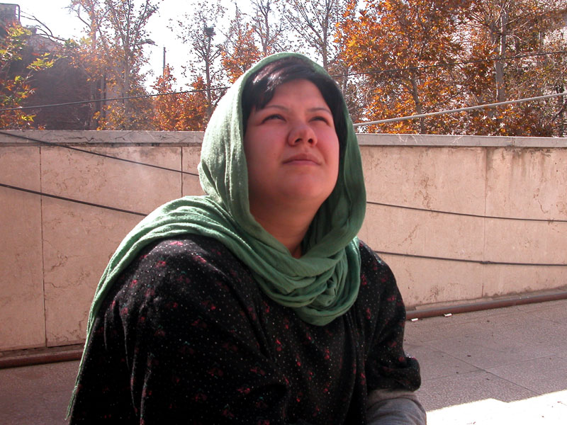

هنوز دسته گل هاي آن شب رويايي در خانه است و لباس عروس جلوه روي صندلي كامپيوتر آرام گرفته هنوز فرصت نكرده ام فيلم رقص سبزت را ببينم اماصورت رنگ پريده زهره را از پشت شيشه ماشين در خيابان سرد و خلوت و باران خورده معلم ديدم كه با لب هاي لرزان گفت فقط 4 ماهش را كم كرده اند...
روزي كه هند را تاب نياوردي و برگشتي مي دانستي شايد ديگر هيچ گاه نتواني رشته مددكاري را در دانشگاه ادامه دهي و اينجا آرامش به استقبالت نخواهد آمد. ولي آيا آنها مي دانند كه مددكار را به زندان بردن خود همه تجربه است و آموزش؟ مي دانند كه دو سال و شش ماه در زندان كنار مددجويان زندگي كردن ارزشمند تر از سال ها درس خواندن در شهر فرنگ است؟ مي دانند كه اوين دانشگاه بزرگي است براي تو كه ديگر زير و بم "بم" را هم درك كرده اي و تمام سوراخ سمبه هاي شوش و دروازه غار را به همراه كودكان كار و خيابان ديده اي.
سه روز بيشتر آنجا نبودم اما وقتي بازگشتم و مددجوي به مرخصي آمده از زندان در اتاق مددكاري گفت: "خانم ديديد زندان چه جاي بدي است؟" شوكه شدم كه او از كجا مي داند و بعد گقتم بله ديدم جاي بدي است. اما به تو مي گويم دل آرام؛ بيشتر از آنكه ناراحت بد بودن زندان باشم خوشحال از فهميدن آن بودم كه حالا هر كدام از زنان و دختران زندان رفته بگويند آنجا جاي بدي است مي گويم مي دانم. مي فهمم. درك مي كنم. و چه چيزي بالاتر از اين درك و فهم مي تواند به كمك مددكار بيايد و كدام دانش و كتاب و درس و استاد مي تواند به ما بفهماند زندان براي زنداني چه معنا دارد؟ چه چيز بالاتر از احساس مشترك متقابل مي تواند به مددجو كمك كند و به او آرامش دهد و تسلايش بخشد؟ دل آرام وقتي به دختر اكرم قويدل گفتم مادرت را در زندان ديدم هزار بار بيشتر از همه لحظه هايي كه برايش كاري كرده بودم تا غم مادر زنداني داشتن را فراموش كند خوشحال شد و چنان در آغوشم كشيد كه انگار مادرش بودم و مادر را مي بوييد. خودت مي دانستي كه هند اين ها را به تو نمي دهد و بسيار چيزهايي را كه نمي داني و نمي دانم اما آنها تصميم گرفته اند در اين دو سال و شش ماه به تو بياموزند. آنها مي خواهند 1140 شبانه روز لحظه به لحظه در كنار همه زنان زنداني باشي كه دنيا دنيا درد و خاطره و غم و شادي دارند و چه بي معناست كه من اين سوي ديوار باشم و فكر كنم مددكارم وقتي تو همان جا باشي...

يادت هست شب قبل از رفتن به دادگاه در خانه تازه سامان گرفته جلوه و كاوه كه بوي تازگي و رنگ و خاك مي دهد گفتم بلند شو كمي شيطنت كن تا بتوانم براي فردايت مطلبي بنويسم و به شوخي گفتي مثل دفعه پيش كه براي كمپين گريه دار نوشته بودي بنويس و از فروغ بگو؟ دل آرامم يادت بماند كه تو خود فروغ زمانه اي. اي كاش خود بود و مي ديد كه چگونه دختران اين روزگار براي احقاق حق همجنسان خود بر آسفالت داغ خيابان كشيده مي شوند و صداي شكستن استخوانشان اما هنوز گوش مسخ شدگان قدرت را كر نكرده است كه گويا از جايي دورتر آنچنان صداي طبل جنگ به بلندي ضربه مي زند كه ديگر هيچ نمي شنود. اي كاش فروغ خود بود و مي گفت: " بچه هاي كوچه ما كيف هاي مدرسه شان را از بمب هاي كوچك پر كرده اند. حياط خانه ما گيج است."(1)
گيج است از همه آنچه اين روز ها رخ مي دهد. گيج است از آمد و رفت مرموزانه روس ها كه هميشه در لحظه هاي گره خورده تاريك تاريخ اين مملكت آرام و بي صدا مي آيند و مي برند... گيج است از آشوب و جنگ افروزي مرزهاي عراق و تركيه كه به خاطرش حتي زن سياه امريكا كه ديگر نه سياهي اش يادش مانده و نه زن بودنش در مقام وزارت امورخارجه به آنجا مي رود تا به خيال خودشان بزرگان بنشينند و مشكل هميشگي عرب و ترك و كرد و فارس را حل كنند و اين جا روناك جوان 21 ساله را با امضا و دفترچه كمپين مي گيرند و مي گويند ربطي به كمپين ندارد دستي در آن چنگ افروزي دارد و انقدر خطرناك است كه بزرگان را به دورهم جمع كرده!!!! .... گيج است از حكمي كه تيغ عدالتشان براي آرمان هايمان بريده است و به لباس زندگي تو دوخته است ولي نمي دانند كه " هميشه خواب ها از ارتفاع ساده لوحي خود پرت مي شوند و مي ميرند و اين تويي كه شبدر چهار پري را مي بويي كه روي گور مفاهيم كهنه روييده است" گيج است از گردش ايام كه حالا امير يعقوب علي از تو بخواهد كه اگر در راهروهاي تنگ و تاريك زندان مازيار را ديدي سلام ما را هم به او برسان و بگو حال همه ما خوب است اما...
دل آرام آن شب سر سفره شام با خنده مي گفتي برايم هلو بياوريد در زندان. و چشمان خيس و قرمز پيامت را نديدي كه چگونه با عشق نگاهت كرد. اما وقتي درختان سبز شدند و هلو ها رسيدند خودت از نردبان بالا مي روي و هلو مي چيني و صداي خنده هاي پيام برگ برگ درختان را مي رقصاند. فعلا بايد ايمان بياوريم به آغاز فصل سرد.
عزيز دل از مادر فمينيست "پايدار" م آموختم كه: " ترس؛ واهمه؛ خشم و كنترلي كه ما در تمامي زندگي هر روز به آن مي چسبيم چه كاذب است و چگونه در عرض دقايقي كوتاه مي توان از آن رهايي يافت. غباري است كه زندگي واقعي ما در پشت آن جريان دارد ..." (2) آموزه هايي كه به زبان ديگر امروز از مادري كه از او زاده شدم شنيدم وقتي خبر حكم تو را شنيد و گفت:" خدا بزرگ است شما به كاري كه مي كنيد ايمان داريد. نترسيد و پيش برويد .ما برايتان دعا مي كنيم."
1- اشعار از فروغ فرخ زاد است
2- برگفته از وصيت نامه پروين پايدار چاپ شده در شماره 32 سايت زنستان